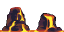
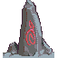
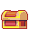
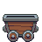
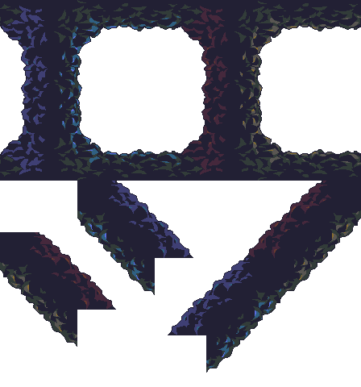
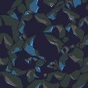

路線:OPP 洞穴包暖色重製(CC0,與第四關冰封礦坑同一包,風格無縫連戲)。
下面分三區:① OPP 現成素材直接用 ② 岩壁暖色重製前後對比 ③ 缺件由程式照 DB32 色盤自畫的動態示意。
看完跟 Claude 說 OK 或要調哪裡。
這些都在手上的素材包裡,零額外授權。




同一批岩壁磚,從冰礦的冷藍紫調成黑曜岩暖棕紅——玩家會感覺「同一座礦坑,越往下越熱」。


素材包沒有的元件,照 OPP 的 DB32 色盤程式繪製(第一、四關同做法)。以下是即時畫的示意動畫,定稿會再細修。